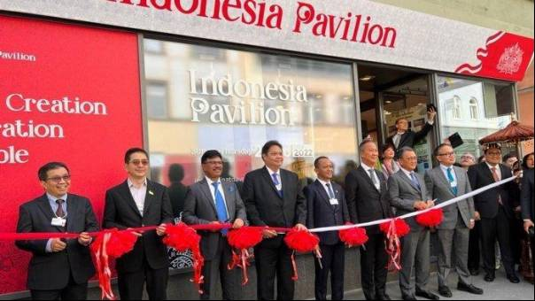

Ekonomi
Promosikan Forum B20 Indonesia ke Eropa, KADIN Dorong Kolaborasi demi Transformasi Ekonomi Global

JAKARTA, SasapuNews - Kamar Dagang dan Industri Indonesia (KADIN) saat ini tengah melakukan lawatan ke Eropa guna mempromosikan forum bisnis B20 Indonesia.
Forum tersebut merupakan bagian dari Presidensi G20 Indonesia, yang bakal menjadi wadah dialog resmi bagi komunitas bisnis global dari negara-negara pesertanya.
Ketua Umum KADIN Arsjad Rasjid menyampaikan, delegasi Indonesia pun memulai kunjungan pertamanya dengan menghadiri World Economic Forum (WEF) di Davos, Swiss, Selasa (24/5/2022).
"Dalam pertemuan tahunan WEF 2022 ini kami menggunakan momentum untuk mempromosikan Presidensi G20 dan B20 Indonesia," kata Arsjad dalam keterangan resminya, Selasa.
Arsjad menjabarkan, ada tiga poin bahasan utama dalam Presidensi G20 dan B20 Indonesia nantinya, seperti arsitektur kesehatan global, transformasi digital, hingga transisi energi.
"(Maka kami) mengajak para pemimpin dunia dan bisnis yang hadir untuk menjalin koneksi, berkolaborasi untuk mendorong pemulihan ekonomi global," ujar Arsjad.
Ajakan itu pun selaras dengan apa yang disampaikan oleh Ketua Penyelenggara B20 Indonesia Shinta W. Kamdani, yang juga ikut dalam delegasi Indonesia ke Eropa.
Shinta melihat, arus perdagangan masa kini semakin meningkat dan tentunya Indonesia memiliki kesempatan untuk ikut terlibat di dalamnya.
"Masih banyak peluang kerja sama antara perusahaan Eropa dan Indonesia yang dapat digali demi membawa manfaat bagi perekonomian kedua pihak," kata Shinta.
Terutama, dalam memperluas partisipasi para pemimpin bisnis global untuk mendorong transformasi ekonomi dunia di masa depan.
"Ini eranya diversifikasi usaha dan menciptakan rantai pasok yang lebih tangguh. KADIN siap menjembatani anggota UE (Uni Eropa) untuk menjajaki peluang investasi di Indonesia," sambungnya.
Shinta percaya, kolaborasi Indonesia dan Eropa akan dapat menjadi salah satu solusi untuk berbagai tantangan global.
Baik itu pandemi Covid-19 yang tetap harus diperhatikan saat ini, masalah perubahan iklim, inovasi energi hijau, maupun tantangan pembangunan demokrasi di sejumlah negara.
Dengan demikian, lawatan yang berlangsung pada 22 Mei-4 Juni 2022 ini diharapkan dapat menjadi fondasi penting bagi B20 Indonesia.